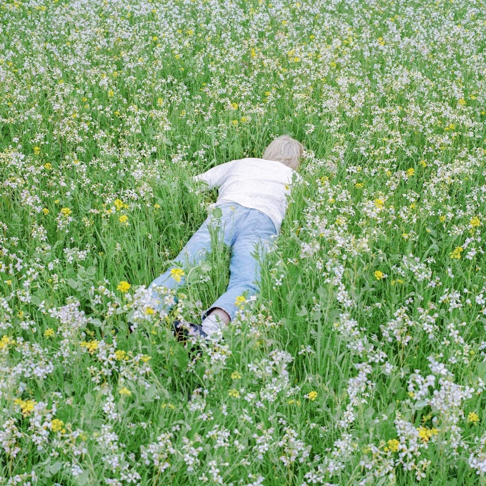

¿Quien es Porter Robinson?
Es un DJ, músico, cantante y productor estadounidense de música electrónica de renombre mundial y uno de los más aclamados en la escena. Está orientado principalmente a los géneros electro house, synthpop y trance.
Albumes
Hasta la fecha (11/10/2022) Porter Robinson ha lanzado 2 albumes los cuales son los siguientes:
| Año | Nombre | Imagen |
|---|---|---|
| 2014 | Worlds | |
| 2021 | Nurture |  |
Canciones
La cancion mas pupular hasta ahora de Porter Robinson es Shelter, esta cancion la hizo en colaboracion con Madeon, ademas en su momento fue tan aclamada que fue llamada uno de los himnos de la musica electronica. La puedes escuchar a continuacion:
Tambien estan otras canciones famosas como:
Pero en lo personal me encantan Flicker y Get Your Wish: